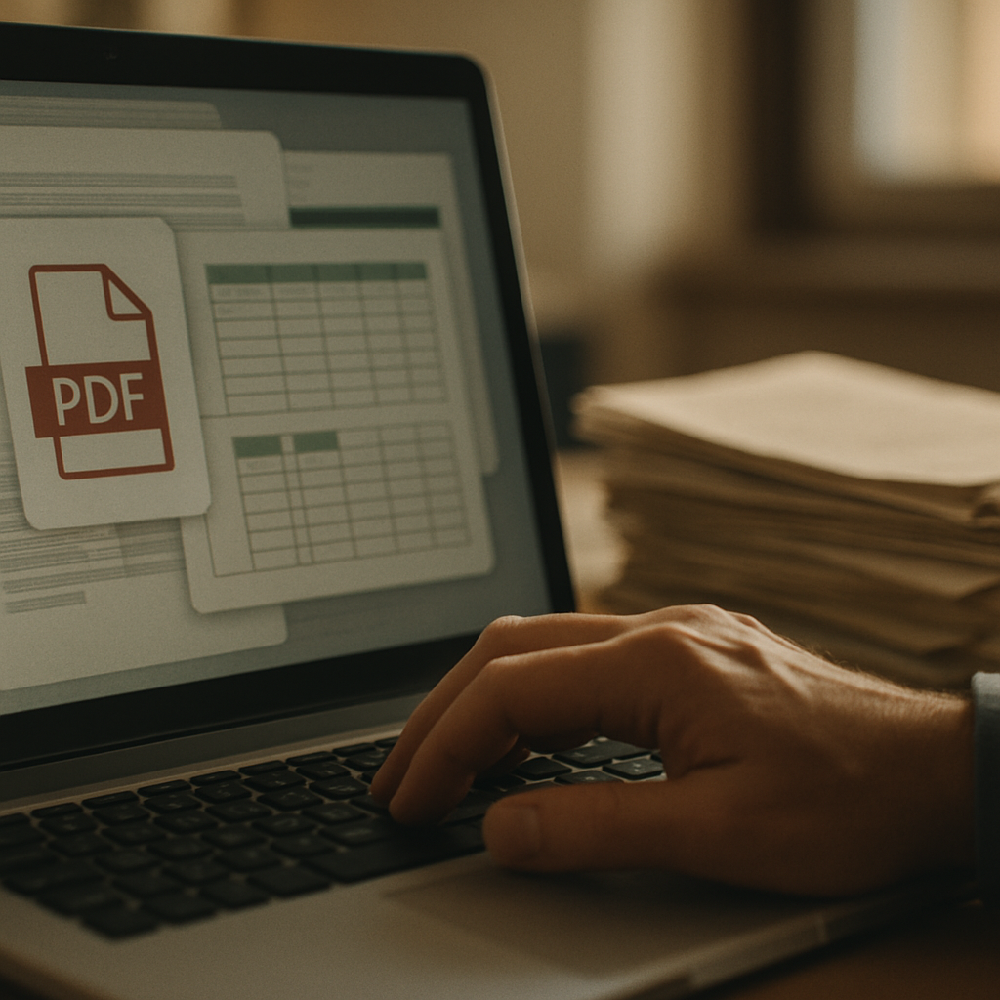

Blog · Microapp documenti tecnici
Ogni volta che cambia una specifica, una versione o una procedura, qualcuno in azienda apre Word, ricopia, riformatta e ridistribuisce. Ore di lavoro tecnico spese a fare copia-incolla. Il problema non è la pigrizia: è che nessun wiki o gestionale produce documenti al posto tuo. Ecco cosa fa davvero la differenza.
Apri la cartella condivisa del server e trovi: "Manuale_v3_DEFINITIVO_revisioneGiugno_USE_THIS.docx". Sotto, lo stesso file con una data diversa. Poi un PDF esportato sei mesi fa, e un Excel con le note di campo che qualcuno ha modificato senza dirlo a nessuno. Questo è il punto di partenza reale per la maggior parte degli uffici tecnici italiani con meno di 80 persone.
Il problema non è la mancanza di disciplina. È che aggiornare un manuale tecnico, una SOP o una scheda prodotto richiede di aprire più fonti, capire cosa è cambiato, riscrivere le sezioni pertinenti, riformattare, tradurre se serve, e distribuire la nuova versione. Una revisione significativa di un documento medio richiede 4-8 ore, a seconda della complessità. Moltiplicalo per la frequenza con cui cambia il prodotto o il processo, e hai una persona quasi parzialmente dedicata a copiare e incollare.
Il costo di non tenere aggiornata questa documentazione è concreto: un tecnico in campo che segue una procedura vecchia di tre mesi, un product manager che manda ai clienti una scheda con specifiche superate, un nuovo assunto che si forma su un runbook che non riflette l'infrastruttura attuale. Ogni errore di questo tipo ha un costo diretto — in rilavorazione, in assistenza, a volte in garanzie o resi. Eppure la documentazione tecnica resta quasi sempre in fondo alla lista delle priorità, perché aggiornarla è manuale, lento e non urgente — fino a quando lo diventa.
La risposta classica al problema della documentazione sparsa è centralizzare: si compra Confluence, si attiva Notion, si mette su SharePoint con una struttura di cartelle sensata. Queste piattaforme fanno bene quello per cui sono progettate — dare un posto unico dove tenere i documenti, controllare le versioni, gestire i permessi. Molte PMI italiane le usano con soddisfazione per l'organizzazione.
Il punto in cui si fermano è la produzione e l'aggiornamento del contenuto. Confluence non legge il tuo datasheet tecnico e non genera una scheda prodotto multilingua. Notion non trasforma un log di configurazione in un runbook strutturato. SharePoint non aggiorna automaticamente il manuale quando cambia la versione firmware di un dispositivo. Questi strumenti organizzano documenti che qualcuno ha già scritto. L'atto di scrivere, riformattare, adattare e aggiornare resta completamente sulle spalle delle persone.
Una stima realistica: circa il 70-80% del tempo che un ufficio tecnico dedica alla documentazione riguarda la produzione e la manutenzione del contenuto, non la ricerca o la consultazione. Sono proprio queste le ore che un wiki non tocca. Arrivare con uno strumento di organizzazione quando il problema è di produzione significa spostare i file in una cartella più ordinata senza ridurre il lavoro di un minuto.

La soluzione è una microapp per documenti tecnici: un'applicazione costruita attorno ai flussi specifici dell'ufficio tecnico, che non organizza soltanto ma legge le fonti esistenti — Word, PDF, Excel, log di sistema — e produce output già strutturati e pronti all'uso. La differenza rispetto a ChatGPT usato in modo generico o a un wiki è che la microapp conosce i tuoi formati di input, i tuoi template di output e le tue regole di naming e versioning. Non lavora su documenti astratti: lavora sui tuoi documenti, con la tua logica.
Dal punto di vista architetturale, uno strumento di questo tipo si regge su tre componenti. Il primo è un motore di lettura delle fonti, capace di estrarre informazioni strutturate da formati eterogenei senza che qualcuno debba copiare e incollare nulla. Il secondo è un layer di trasformazione, che applica regole di output specifiche: una SOP diventa una checklist operativa, un datasheet diventa una scheda prodotto, un log di configurazione diventa un runbook. Il terzo è un meccanismo di trigger, che avvia il processo quando qualcosa cambia — una nuova versione del file sorgente, un aggiornamento nel sistema di product management, una modifica al codice firmware.
Non è qualcosa che si costruisce in un pomeriggio con un template trovato online. Collegare le fonti richiede decisioni non banali su come normalizzare formati diversi. La parte più delicata è definire le regole di trasformazione in modo che l'output sia corretto e non richieda revisione sistematica. Serve qualcuno che abbia già affrontato questi problemi su casi reali, sappia dove si rompono i flussi e come si gestisce la manutenzione nel tempo.
Un'azienda manifatturiera del nord-est, 38 dipendenti, produce componenti industriali per il mercato europeo. Il responsabile tecnico gestiva manualmente la documentazione di circa 60 prodotti attivi: ogni volta che cambiava una specifica — tolleranza, materiale, certificazione — doveva aprire il datasheet originale, aggiornare il manuale interno, rigenerare la scheda commerciale in italiano e in tedesco, e notificare il team qualità. Una revisione completa richiedeva 1,5-2 giorni lavorativi. Con un ciclo di aggiornamento prodotto di 4-6 settimane, il responsabile tecnico dedicava il 10-15% del suo tempo a trascrizione e riformattazione.
Dopo l'introduzione di una microapp per documenti tecnici collegata ai datasheet sorgente, lo stesso aggiornamento richiede 20-25 minuti: il tempo di verificare l'output generato automaticamente, fare eventuali correzioni puntuali e approvare. Le schede prodotto in italiano e tedesco vengono prodotte in parallelo. Il sistema segnala automaticamente le sezioni del manuale che contengono riferimenti alla specifica modificata, così la revisione è mirata e non richiede di rileggere tutto da capo. Il risparmio è di circa 1,5 giorni lavorativi per ciclo di aggiornamento.
Questo risultato vale perché l'azienda aveva datasheet già strutturati in modo relativamente coerente e un formato di output stabile nel tempo. Quando le fonti sono molto disomogenee — documenti scritti da persone diverse in anni diversi, con logiche diverse — la fase di setup richiede più lavoro e i margini di miglioramento immediati sono più contenuti. La microapp dà il massimo quando le fonti hanno una struttura riconoscibile: anche imperfetta, ma riconoscibile.
| Hai questo | Conviene |
|---|---|
| Meno di 10 documenti tecnici attivi, aggiornamento raro (1-2 volte l'anno) | Non vale l'investimento: gestisci manualmente con un template Word condiviso |
| 20-40 documenti, aggiornamenti frequenti ma flusso già gestito con un wiki o Confluence | Valuta un tool off-the-shelf di document automation prima di costruire custom |
| Più di 40 documenti attivi, cicli di aggiornamento mensili o più frequenti, output in più formati o lingue | Una microapp custom ha ROI chiaro: il tempo recuperato copre i costi in 6-10 mesi |
| Hai già avuto un errore documentale che ha generato un reclamo, un fermo produzione o un problema di conformità | Costruisci custom prima che si ripeta: il costo dell'errore supera di solito quello della microapp |
Dipende da quanto sono inconsistenti. Se i documenti sono scritti in modo molto diverso — struttura che cambia da file a file, terminologia non uniforme, informazioni in posizioni diverse — la microapp riesce comunque a estrarre contenuto, ma l'output avrà bisogno di più revisione manuale nelle prime settimane. Il setup iniziale include una fase di analisi delle fonti proprio per capire il livello di uniformità. In alcuni casi conviene prima fare un lavoro di normalizzazione minima sui documenti sorgente — non riscriverli da zero, ma portarli a uno standard sufficiente — e poi avviare l'automazione. Questo vale soprattutto per aziende che hanno documentazione accumulata in anni diversi da persone diverse. Non è un ostacolo insuperabile, ma va messo in conto nel progetto.
Una microapp ben costruita legge i formati che usi davvero: Word (.docx), Excel (.xlsx), PDF — anche scansionati, con un layer OCR — e in molti casi log di testo strutturato o export da sistemi PLM e ERP. Il punto critico non è tanto il formato del file quanto la struttura del contenuto al suo interno: un PDF con testo selezionabile è molto più semplice da processare di uno scansionato in bassa risoluzione. I file Excel con dati in celle nominabili sono più semplici di quelli con layout misti testo-tabella senza una logica fissa. Durante la fase di analisi iniziale, valutiamo esattamente i tuoi file sorgente e ti diciamo dove si trovano i punti di attenzione prima di avviare lo sviluppo.
Sì, una microapp per documenti tecnici rientra nel perimetro del credito d'imposta Transizione 4.0, specificamente nelle categorie legate alla digitalizzazione dei processi aziendali e all'integrazione di sistemi di gestione delle informazioni. L'aliquota applicabile dipende dalla dimensione dell'azienda e dall'anno di realizzazione dell'investimento. Per accedere all'agevolazione serve documentazione tecnica del progetto e, in molti casi, una perizia asseverata. Seguiamo i clienti anche in questa fase: prepariamo la documentazione tecnica necessaria per la pratica e, se serve, coordiniamo con il commercialista o il consulente fiscale per la parte formale. Chiedi un preventivo con già l'analisi dell'agevolazione applicabile al tuo caso.
Prossimo passo
Apri K-BOT e in 5 minuti ti diciamo se questa categoria di soluzione fa al caso della tua PMI, oppure se basta uno strumento off-the-shelf. Gratuito.
L'offerta K2-AI sulla categoria: cosa fa, come si integra, tempi e modalità.
Descrivi il tuo caso. K-BOT dice se vale custom o se basta uno strumento standard.
Se preferisci una call diretta, scrivici. Rispondiamo in 24 ore con una lettura onesta.